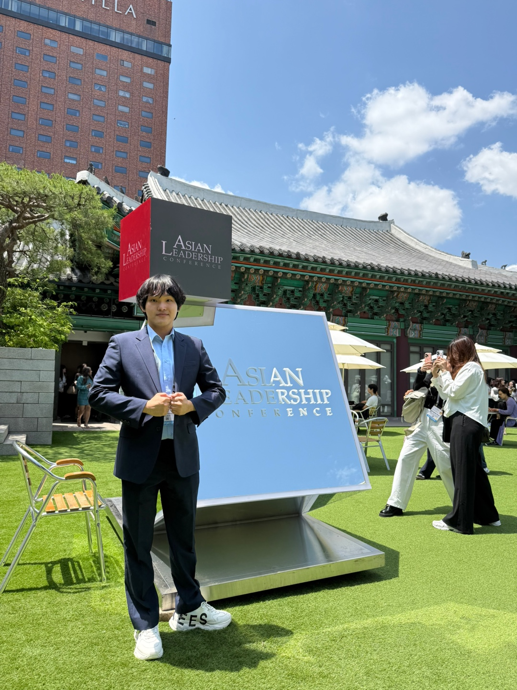

이름: 최진혁 (Jinhyuk Choi), Thomas(토마스와 친구들에서의 토마스, 그리고 톰과제리에서의 톰을 좋아해서 토마스가 됐답니다.)
생년월일: 2001년 04월 25일생 여러분과 별 차이 안납니다. 호들갑 떨지 마세요!
출생지(고향): 서울특별시
거주지: 경기도 의왕시
MBTI: ESTP
특이사항: 아펜젤러 하우스 RA(25-2), 계절학기 마스터(18학점 수료), UIC 졸업요건 암기
학력: 4수를 하면 학력이 화려해진답니다! 여려분들도 N수 하세읍읍!
연세대학교 불어불문학과/경제학과(복전 붙으리라 김칫국 한 사발 합니다. 제발 붙여만주세요) (재학)
국민대학교 경영대학 재무금융회계학부 재무금융학전공(자퇴)
우성고등학교(2020년 01월 졸업) 34기 졸업생입니다!
이하 생략
프로젝트 다짐: 원하는 곳으로 전과를 못 하는 만큼 불어불문학과에 최선을 다하겠습니다.혁신불문 화이팅!
